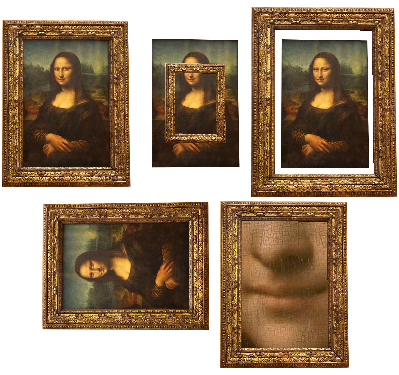
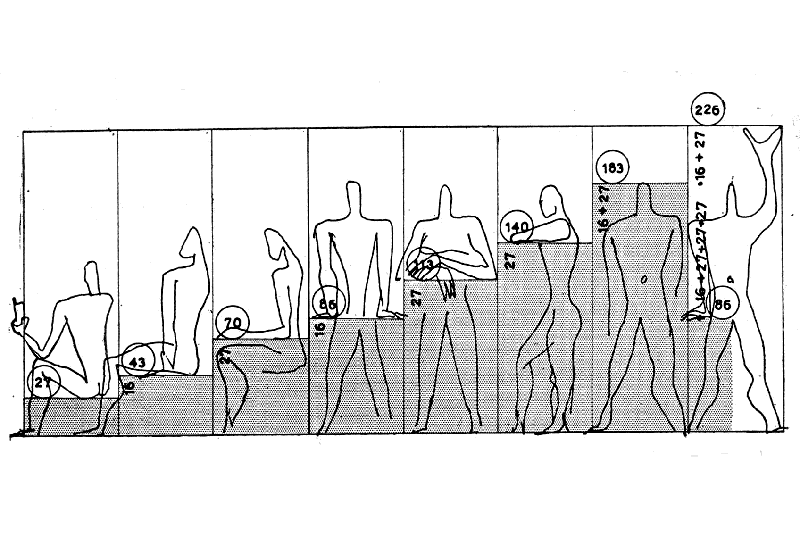

Possibilités du Web Interactif
Le web interactif constitue un médium hybride, se situant à la croisée du cinéma, de la télévision, du livre, des jeux vidéo et bien d’autres domaines. Il s’approprie les caractéristiques propres à chacun de ces secteurs tout en étant une entité distincte, reconnaissable mais difficile à définir de manière précise. Cette ambiguïté résulte de la nature même d’Internet, intrinsèquement liée aux notions d’étendue et de réceptacle pour une multiplicité de médias.
Dans le langage courant, on surf ou navigue sur le web, évoquant l’image de parcourir un océan d’informations accessibles via des navigateurs tels qu’Internet Explorer. Cette métaphore suggère une dimension d’aventure. Cependant, le web demeure généralement très statique, presque monolithique, caractérisé par des colonnes, des lignes et des onglets.
De plus, le numérique englobe une multitude de supports : PC, smartphones, tablettes, montres, etc., chacun doté de formats, de capacités techniques, de systèmes d’exploitation, de configurations colorimétriques et de qualités audio distincts. Ces différents supports – PC, smartphones, etc. – ne sont pas utilisés de la même manière, bien qu’ils accèdent aux mêmes destinations. En effet, on ne tient pas un smartphone de la même façon que l’on se positionne devant un PC, ce qui entraîne une réception différente des contenus.
Par ailleurs, des variables telles que les temps de chargement influencent l’expérience utilisateur. Le contexte d’utilisation joue également un rôle crucial : que l’on soit confortablement installé dans un canapé, plongé dans le tumulte du métro ou concentré au bureau, les attitudes et les gestes adoptés varient, impactant la réception des informations.
La Diversité des Supports Numériques
Le numérique englobe une multitude de supports — PC, smartphones, tablettes — chacun avec des formats, des capacités techniques, des systèmes d'exploitation, des configurations colorimétriques et des qualités audio distinctes. Cette diversité pose des défis uniques en termes de conception et de développement, mais elle offre également une richesse d'opportunités pour la création de contenus interactifs. Chaque plateforme possède ses propres spécificités techniques et ergonomiques, influençant la manière dont le contenu est perçu et interactive.

Contexte d'Utilisation
Le contexte dans lequel l'utilisateur accède au web interactif joue un rôle crucial. Que ce soit installé dans un canapé, dans le tumulte du métro ou concentré au bureau, les attitudes et les gestuelles adoptées différemment, impactant la réception des informations. Par exemple, une interface conçue pour une utilisation en déplacement doit être rapide, réactive et facile à naviguer d'une seule main.


Les différents formats d'écran et les capacités techniques varient considérablement d'un support à l'autre. Les PC de bureau, par exemple, disposent généralement de plus grandes résolutions et de capacités graphiques supérieures, permettant des visuels détaillés et des animations complexes. En revanche, les smartphones et les tablettes, avec leurs écrans plus petits et souvent tactiles, ont obligatoirement des interfaces épurées et des interactions simplifiées. Cette variabilité impose aux concepteurs de penser de manière adaptative, en utilisant des technologies telles que le responsive design pour assurer une expérience cohérente et optimale sur tous les dispositifs.
Temps de Chargement :
Les temps de chargement peuvent varier en fonction de la connexion internet et des performances de l'appareil. Des temps de chargement longs peuvent frustrer l'utilisateur et nuire à l'engagement, d'où l'importance d'optimiser les ressources et les performances du site.
Pour afficher l'image, restez appuyer sur la touche MAJ jusqu'à la fin du téléchargement.
Interaction avec la souris
Mouvement
mouvements de la souris pour activer des fonctionnalités de zoom ou de rotation.balayage avec la souris pour revenir en arrière ou avancer dans un menu
Survol
Déclenchez l'affichage des informations supplémentaires ou Active des animations, des changements de couleur ou des effets de surbrillance sans nécessiter de clic.
Clic Simple
Sélectionner des éléments, activer des fonctionnalités interactives.
Double-Clic
Un double-clic peut ouvrir des documents, des applications intégrées ou des fichiers multimédias directement depuis le navigateur.
Maintien du Clic
Permet aux utilisateurs de zoomer sur des images. Déplacement d’éléments sur l’écran pour repositionner des objets graphiques ou des cartes mentales
Molette de Défilement
La molette permet un contrôle précis sur la vitesse et la direction du défilement vertical ou horizontal. Permet de zoomer in ou out sur des images
Interaction avec le clavier
Saisie clavier
Chaque touche possède un numéro d'identification unique. Ces numéros peuvent être utilisés pour positionner des formes dans l'espace.
Multimédia
La Video
Exemple d'un puzzle video, utiliser le glisser déposer pour déplacer les morceaux du puzzle.
Le Son
@arialabel. Two grey circles on a light grey background that move as the user moves their mouse and plays different noises based on their distance from each other